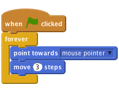
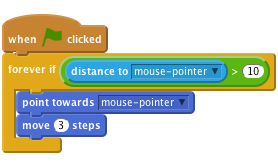
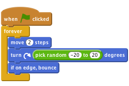
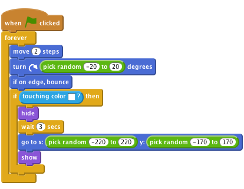
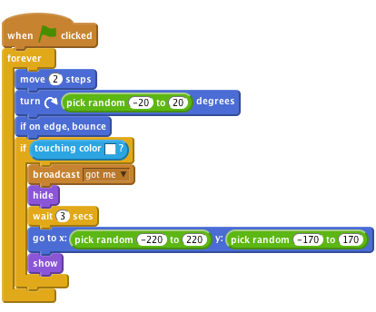
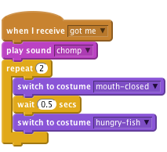

Fish Chomp
Level 2
We’re going to make a Fish Chomp game! Guide the large Hungry Fish and try to eat all the prey that are swimming around.

Let’s make the Hungry Fish swim around the sea!
choose background from library. Finally, remove backdrop1.Now create a script for Hungry Fish to follow the mouse around the sea like this:

Click the green flag.
Move the mouse pointer around the sea. Does the fish follow the pointer?
What happens if you don’t move the mouse pointer and the fish catches up with it? What does it look like? Why does it do this?
You can stop the Hungry Fish flipping like crazy if you make it only move when it’s not too near the mouse pointer
(The distance to block is in the Sensing palette).

If you want, you can put different numbers in the script. How does that change how Hungry Fish moves? Change the distance threshold to a large number (e.g. 100), or a small number (e.g. 1). Change the amount the fish moves to a large number (e.g. 20) or a small number (e.g. 1 or even 0).
It's time to make something for the Hungry Fish to try to eat!
Shrink sprite tool (above the Stage) to make the sprite smaller.Create a script to make the prey swim around. We want them to move randomly, so let’s make it move forward a bit, then turn a random amount left or right, then do it again.

Click the green flag and watch the prey swim around. Does it swim like you expect? Does it swim realistically?
At the moment, the Hungry Fish and the prey don’t interact with each other. We’ll sort that out in the next step.
pick random and move blocks. How do they make the prey move differently?if on edge, bounce block do? Take it out and see what happens.Now we want to make the Hungry Fish eat the prey! Once the Hungry Fish has caught the prey in its mouth, two things need to happen:
First, let’s make the prey disappear if it is touching the Hungry Fish, and then reappear 3 seconds later. Use the touching block to see if it is touching the fish.
![forever
move (2) steps
turn right (pick random (-20) to (20)) degrees
if on edge, bounce
if <touching [Hungry Fish v]?> then
hide
wait (3) secs
show](ac9156e2474207599cf229244794fabf0db9ee5d.png)
Try out your game again – can you spot any problems? Notice that the prey disappears no matter where it touches the Hungry Fish. Also, the fish could just wait 3 seconds and eat the prey the moment it reappears – this isn’t very fair!
touching color block, and see if it is touching the fish’s blue teeth. To do this, replace the touching block with a touching color block in your script, click on the color in the block and then click again on the fish’s teeth.Next we can make the prey move to a random point on the screen before reappearing using a go to block, and giving it a random value for x and y.

Try the game again – does the prey only vanish when it touches the fish’s mouth? And does it re-appear in a random point on the screen instead of where it was eaten?
The fish needs to know when it has eaten something so it can play a sound and change its skin. To do this, we can have the prey broadcast the fact that it’s been eaten before vanishing.

Now we want the fish to respond to this message by making a “chomp” sound and snapping its jaws.
Then, add a new script to the Hungry Fish to respond to the message broadcast by the prey. This script should make the fish play the 'chomp' sound and switch to the mouth-closed costume, wait briefly and then switch back.

Now our Hungry Fish is ready to eat, let’s fill the ocean with prey. Right-click on the prey sprite and click “duplicate” several times.
Click the green flag.
Does the Hungry Fish eat the prey? Does it eat each of the different prey?
Why do we need to add a show block to the start of the prey’s script? Think about what would happen if the prey is eaten, then the game is stopped before it reappears. What would happen if the game was restarted then?
Well done you’ve finished the basic game. There are more things you can do to your game though. Are you ready for a challenge?
At the moment, all the prey move in the same way. Can you make one of them move differently? Hint: Don’t spend too long on this bit without looking at the other activities in this project.
Pick one of the prey to experiment on. If they have the same costumes, make it a different colour with the set color effect block. That way, you can tell it apart from the rest of the prey.
Make this prey move slower than the others. Hint: Look at the move 2 steps block.
Does the prey move slower? Does this make the game better?
If you can do that, try making one of the prey move quicker than the others.
Does the prey still move in a sensible way? Do these changes make the game better?
Hint: If your prey swims around in circles, check the values of the pick random block in the turn block.
How about you make each of the prey behave differently, using different combinations of these changes?
Do any of these changes make the game better? Do they make the game more interesting, more fun, harder, or easier? Are any of those “better”?
The prey in this game are really stupid! They just swim around randomly until they’re eaten. Real prey swim away from predators. Let’s make one of the prey swim away from the Hungry Fish.
There’s no block in Scratch that tells you the direction that another sprite is in. But you can make one sprite point towards another, then make it turn around to face away. The blocks you need are in the Motion palette.
Using that idea, make one of the prey always point away from the Hungry Fish.
You might find that your prey gets stuck in the corner if it is always swimming away from the fish. You might want to have the prey only try to escape when the fish gets close. Hint: Look back at how we used the distance to block ealier in the game.
Does this make the prey harder to catch? Does it make the game better?
It’s not enough just to eat lobsters. How do you know you’re better at the game than your friends? You need a way to keep score so lets add a score board. Look at the Keep Score scratch card for an idea of how to do it.
Where should you put the block that changes the score?
Make sure the score goes back to zero at the start of the game. Where should you put that block?
Does the score go to zero at the start of the game? Does it go up every time you eat prey?
Give yourself a time limit in the game. How many prey can you eat in thirty seconds?
Look at the Timer scratch card for how to add a timer to the game. Start with the game lasting thirty seconds.
Does the timer start at 30?
Does it go down at the right speed?
Can you catch prey while the timer is going?
Does the game stop when the timer reaches zero?
Award a large bonus score if you can eat all three lobsters at the same time. How can you tell how many prey have been eaten?
Hint: One way to do this uses a variable to count how many prey are swimming around.
Sometimes, you can have great new ideas by taking an existing idea and doing the opposite.
Modify the game so that, instead of you controlling a fish that tries to eat the others, you control one prey in a sea with lots of Hungry Fish. How long can you last before you’re eaten? Instead of having a score, how about giving the prey 3 lives and ending the game when they're all gone?
Well done you’ve finished, now you can enjoy the game!
Don’t forget you can share your game with all your friends and family by clicking on Share on the menu bar!